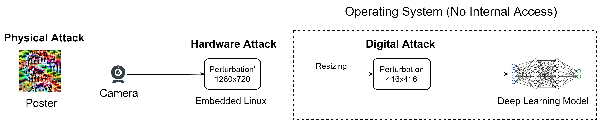

Man-in-the-Middle Attack against Object Detection
Han Wu, Sareh Rowlands, and Johan Wahlstrom
Is Deep Learning secure for Robots?
Source Code
Deep learning models are vulnerable to adversarial attacks.

To achieve real-time adversarial attacks, we need to solve two problems:
-
How to generate the perturbation? (The PCB Attack)
-
How to apply the perturbation? (The Man-in-the-Middle Attack)
Step 1: Generating the perturbation (The PCB Attack)
Prior Research
Our Method
No learning rate decay
With learning rate decay
Our method generates more bounding boxes, and have less variation.

Step 2: Applying the perturbation (The Man-in-the-Middle Attack)

Man-in-the-Middle Attack against Object Detection

Is Deep Learning secure for Robots?